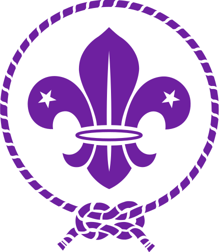

Bienvenu sur ma page qui va vous apprendre et découvrir une partie de ma vie, le Scoutisme. Je fais les scouts depuis plusieurs années, et à travers les questions qui seront posées vous pourrez effleurer mon parcours scout. Il vous suffira de cliquer sur l'image qui vous semble correct pour accéder à la suite de mon parcours. Aller, clique sur la fleur de lys scoute pour commencer:
